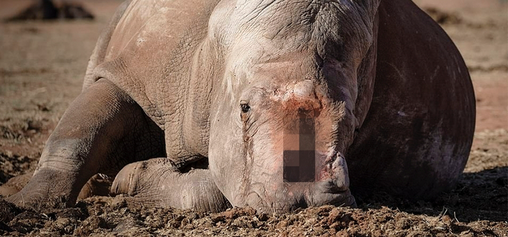
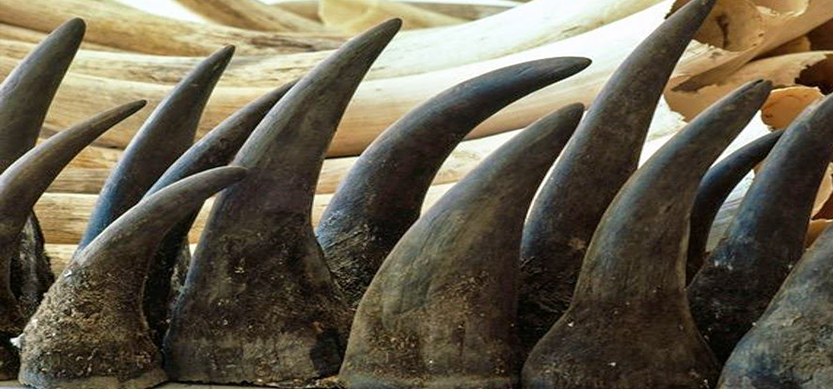
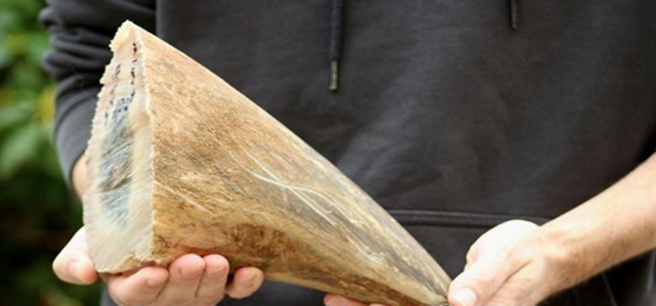
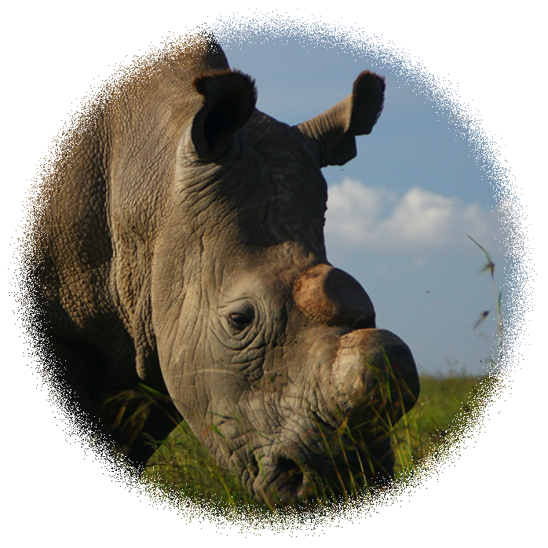

Rhinocerotidae
(절멸 위급)
코뿔소 또는 무소는 말목에 속하는 포유류로, 코끼리 다음으로 큰 대형 육상동물이다
코뿔소 중 자바코뿔소, 검은코뿔소, 수마트라코뿔소 3종이 심각한 멸종 위기종이며, 두 종인 인도코뿔소와 흰코뿔소는 멸종위협을 받는 종이다. 흰코뿔소 이외는 무리를 짓지 않으며, 단독 또는 어미와 새끼가 함께 낮에는 쉬고 밤에 활동한다. 큰 몸과 뿔을 무기로 갖추고 있기 때문에 천적이 거의 없다. 수컷은 오줌을 뒤쪽으로 뿜어서 나무 등에 뿌려 세력권의 신호로 삼기도 한다.
Why are rhinoceros endangered?
  코뿔소 뿔의 엄청난 가격 때문이다. 코뿔소의 뿔은 예로부터 약용 및 조각의 재료로서 귀중히 여겨져 왔다.
한방에서는 코뿔소의 뿔을 서각이라 칭하여 해열 및 해독에 효능이 있다고 한다. 사람들은 뿔의 분말이 해열·최음제로서 효능이 있다고 믿어 왔고 고대 중국에서는 뿔을 재료로 하여 아름답게 조각을 한 술잔이 사용되었다. 또한 아랍 지역에서는 단검의 자루에 코뿔소의 뿔을 쓰는 것이 유행하고 있기 때문에 많은 뿔이 소비되고 있다.
특히 흰 코뿔소 뿔은 정력제로 소문이 나서 암시장에서 ㎏당 최고 6만 달러, 우리 돈 6천700만 원이 넘는 금액에 거래되는 것으로 알려졌다. 금이나 코카인보다도 더 비싼 셈이다.
코뿔소는 '뿔' 때문에 밀렵꾼에 의해 아프리카에서만 한 달 평균 100마리씩 목숨을 잃는다. 지난해에만 천마리 넘게 희생됐고 이제 흰 코뿔소는 전 세계에 2만 마리가량밖에 남지 않았다.
어떻게 예방하고 있나?
일부 아프리카 지역에서는 뿔을 노리는 밀렵꾼들의 사냥을 막기 위해 코뿔소를 붙잡아 일부러 뿔을 잘라 내는 일까지 하고 있다. 또한 여러 나라에서 밀렵을 막기 위한 법이 마련되어 밀렵을 감시하고 있으며 수를 증대시키는 노력을 하고 있다.
Okay to cut off all the horns of the rhinoceros?
|  | 우선 수의학자들은 코뿔소가 뿔이 잘리는 과정에서 통증을 느끼지는 않는다고 한다. 코뿔소의 뿔은 일종의 단단한 각질이라 잘라도, 큰 통증을 유발하지 않고 생명에도 위협을 주지 않는다는 것이다.. |
|---|